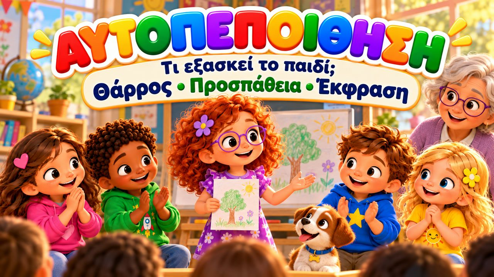
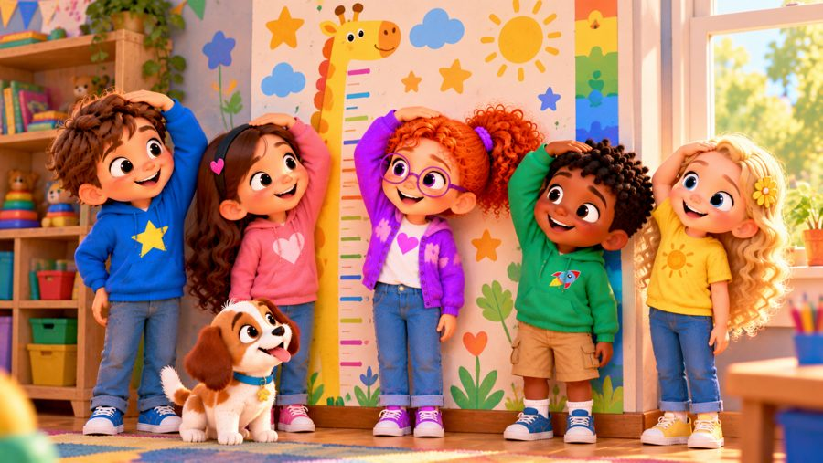
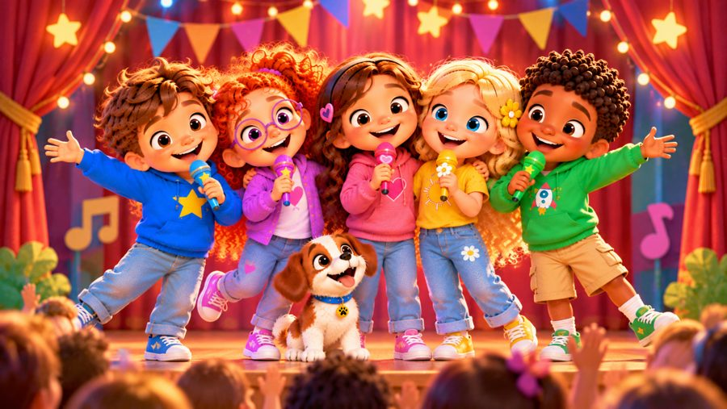

Πιστεύω στον εαυτό μου
Ένα χαρούμενο τραγούδι για την αυτοπεποίθηση! 💪 Τραγουδήστε με τον Μαξ, τη Μία, τον Τζέι, τη Λίλη, τη Ρόζα και τον σκυλάκο Μπάντι, που μαθαίνουν ότι θάρρος δεν σημαίνει ότι δεν φοβάμαι ποτέ — σημαίνει ότι παίρνω ανάσα, στέκομαι ψηλά και δοκιμάζω!
Το «Πιστεύω στον εαυτό μου» είναι ένα τραγούδι για παιδιά που χτίζει αυτοπεποίθηση: η Ρόζα αγχώνεται να πει την ιδέα της μπροστά στην τάξη, η Μία διστάζει να παίξει ένα καινούργιο παιχνίδι — μα βήμα βήμα βρίσκουν το θάρρος τους, κάνουν λάθη, μαθαίνουν και προχωρούν. Με στίχους-καραόκε, για παιδιά 3–8 ετών και τα Εργαστήρια Δεξιοτήτων.

▶💡 Γιατί είναι σημαντικό: Αυτοπεποίθηση
Η αυτοπεποίθηση δίνει στα παιδιά το θάρρος να δοκιμάζουν καινούρια πράγματα, να μιλούν και να συνεχίζουν όταν κάτι είναι δύσκολο. Μεγαλώνει με τις μικρές επιτυχίες και με μεγάλους που πιστεύουν σε αυτά. Δώστε στο παιδί πραγματικές ευκαιρίες να κάνει πράγματα μόνο του και γιορτάστε το θάρρος να προσπαθήσει, όχι μόνο το αποτέλεσμα.
👨👩👧 Τι μαθαίνει το παιδί
- Ότι είναι φυσικό να ντρέπεται ή να αγχώνεται — και μπορεί να δοκιμάσει
- Ένα απλό σχέδιο θάρρους: ανάσα, στέκομαι ψηλά, δοκιμάζω
- Ότι δεν χρειάζεται να τα ξέρει όλα ή να είναι το καλύτερο
- Ότι τα λάθη είναι μέρος της μάθησης
- Να ζητά βοήθεια και να λέει την ιδέα του
💬 Κουβέντα μετά το τραγούδι
- Πότε ένιωσες λίγο άγχος αλλά δοκίμασες;
- Τι σε βοηθά να νιώθεις γενναίος/α;
🏅 Κουίζ & Πτυχίο
Είδατε το τραγούδι μαζί; Τώρα διαβάστε στο παιδί κάθε ερώτηση — το παιδί δείχνει τη σωστή εικόνα. Αν απαντήσει και στις 6 ερωτήσεις, κερδίζει ένα πτυχίο για εκτύπωση!
🔒 Το όνομα χρησιμοποιείται μόνο για να φτιαχτεί το πτυχίο στη συσκευή σας. Δεν αποθηκεύουμε και δεν στέλνουμε τίποτα.
Τα κατάφερες! 🎉
Και οι 6 απαντήσεις είναι σωστές! Γράψτε το όνομα του παιδιού για να φτιαχτεί το πτυχίο.
🖨️ Δωρεάν εκτυπώσιμα
Δωρεάν για χρήση στο σπίτι και στην τάξη. Εκτυπώστε σε χαρτί Α4.
🖼️ Σκηνές από το τραγούδι




🎵 Κι άλλα τραγούδια


🎤 Στίχοι – Πιστεύω στον εαυτό μου
Μερικές φορές ντρέπομαι,
φοβάμαι να δοκιμάσω.
Μα παίρνω μια βαθιά ανάσα
και στον εαυτό μου λέω:
«Θα δοκιμάσω.
Θα μάθω.
Πιστεύω στον εαυτό μου!»
Σήμερα μπροστά στην τάξη
ήρθε η ώρα να μιλήσω.
Η καρδιά μου χτυπούσε δυνατά,
κι ήθελα λίγο να κρυφτώ.
Πήρα ανάσα και μέτρησα ως τρία,
ένα... δύο... τρία...
σήκωσα το χέρι μου ψηλά
και είπα τη δική μου ιδέα!
Κι όταν τελείωσα, χαμογέλασα,
δεν ήταν τόσο τρομερό!
Έκανα αυτό το πρώτο βήμα
και ένιωσα πολύ καλά γι' αυτό!
Δεν χρειάζεται να ξέρω
να τα κάνω όλα σωστά.
Κάνω ένα μικρό βήμα
και προχωράω σταθερά!
Πιστεύω στον εαυτό μου!
Πιστεύω πως μπορώ!
Κάτι νέο θα δοκιμάσω,
κάθε μέρα θα μαθαίνω και θα προχωρώ!
Πιστεύω στον εαυτό μου!
Βήμα βήμα προχωρώ.
Μπορεί ακόμα να μην ξέρω,
μα θα μάθω αν προσπαθώ!
Παίρνω ανάσα!
Στέκομαι ψηλά!
Κάνω μια προσπάθεια
με θάρρος στην καρδιά!
Πιστεύω...
πιστεύω στον εαυτό μου!
Είδα ένα παιχνίδι καινούργιο,
που δεν είχα ξαναπαίξει.
«Κι αν δεν ξέρω; Κι αν μπερδευτώ;
Κι αν κάτι δεν μου βγει σωστό;»
Οι φίλοι μου είπαν «Έλα κι εσύ!»
και πήγα λίγο πιο κοντά.
Δοκίμασα πρώτα ένα μικρό βήμα
και μετά ακόμα ένα ξανά.
Έκανα λάθη — δεν πειράζει!
Έτσι μαθαίνουμε παιδιά.
Κάθε φορά που δοκιμάζω,
νιώθω πιο σίγουρος ξανά!
Δεν χρειάζεται να ξέρω
να τα κάνω όλα σωστά.
Κάνω ένα μικρό βήμα
και προχωράω σταθερά!
Πιστεύω στον εαυτό μου!
Πιστεύω πως μπορώ!
Κάτι νέο θα δοκιμάσω,
κάθε μέρα θα μαθαίνω και θα προχωρώ!
Πιστεύω στον εαυτό μου!
Βήμα βήμα προχωρώ.
Μπορεί ακόμα να μην ξέρω,
μα θα μάθω αν προσπαθώ!
Παίρνω ανάσα!
Στέκομαι ψηλά!
Κάνω μια προσπάθεια
με θάρρος στην καρδιά!
Πιστεύω...
πιστεύω στον εαυτό μου!
Νιώθεις λίγο άγχος;
ΠΑΡΕ ΑΝΑΣΑ!
Είναι κάτι νέο;
ΔΟΚΙΜΑΣΕ!
Έκανες ένα λάθος;
ΔΕΝ ΠΕΙΡΑΖΕΙ!
Θέλεις βοήθεια;
ΘΑ ΤΗ ΖΗΤΗΣΩ!
Έχεις μια ιδέα;
ΘΑ ΤΗΝ ΠΩ!
Είσαι έτοιμος;
ΝΑΙ, ΕΙΜΑΙ!
Σε ποιον πιστεύεις;
ΣΤΟΝ ΕΑΥΤΟ ΜΟΥ!
Αυτοπεποίθηση
δεν σημαίνει
πως ποτέ δεν φοβάμαι.
Σημαίνει πως μπορώ
να δοκιμάσω,
ακόμα κι όταν έχω λίγο άγχος.
Μπορώ να μάθω.
Μπορώ να βελτιωθώ.
Μπορώ να ζητήσω βοήθεια.
Και μπορώ να είμαι ο εαυτός μου!
Πιστεύω στον εαυτό μου!
Πιστεύω πως μπορώ!
Κάτι νέο θα δοκιμάσω,
κάθε μέρα θα μαθαίνω και θα προχωρώ!
Πιστεύω στον εαυτό μου!
Βήμα βήμα προχωρώ.
Δεν χρειάζεται να ξέρω τα πάντα
για να πω «θα προσπαθήσω εγώ!»
Παίρνω ανάσα!
Στέκομαι ψηλά!
Λέω την ιδέα μου
με θάρρος στην καρδιά!
Μπορώ να μάθω!
Μπορώ να προχωρώ!
Και κάθε μέρα λίγο λίγο
πιο πολύ θα προσπαθώ!
Πιστεύω στον εαυτό μου!
Ναι, μπορώ!
Και μπορείς κι εσύ
να πιστεύεις στον δικό σου!
Ένα μικρό βήμα...
κι ύστερα άλλο ένα.
Δεν χρειάζεται να ξέρω τα πάντα.
Φτάνει να δοκιμάσω.
Μπορώ να μάθω.
Μπορώ να προχωρώ.
Πιστεύω στον εαυτό μου!